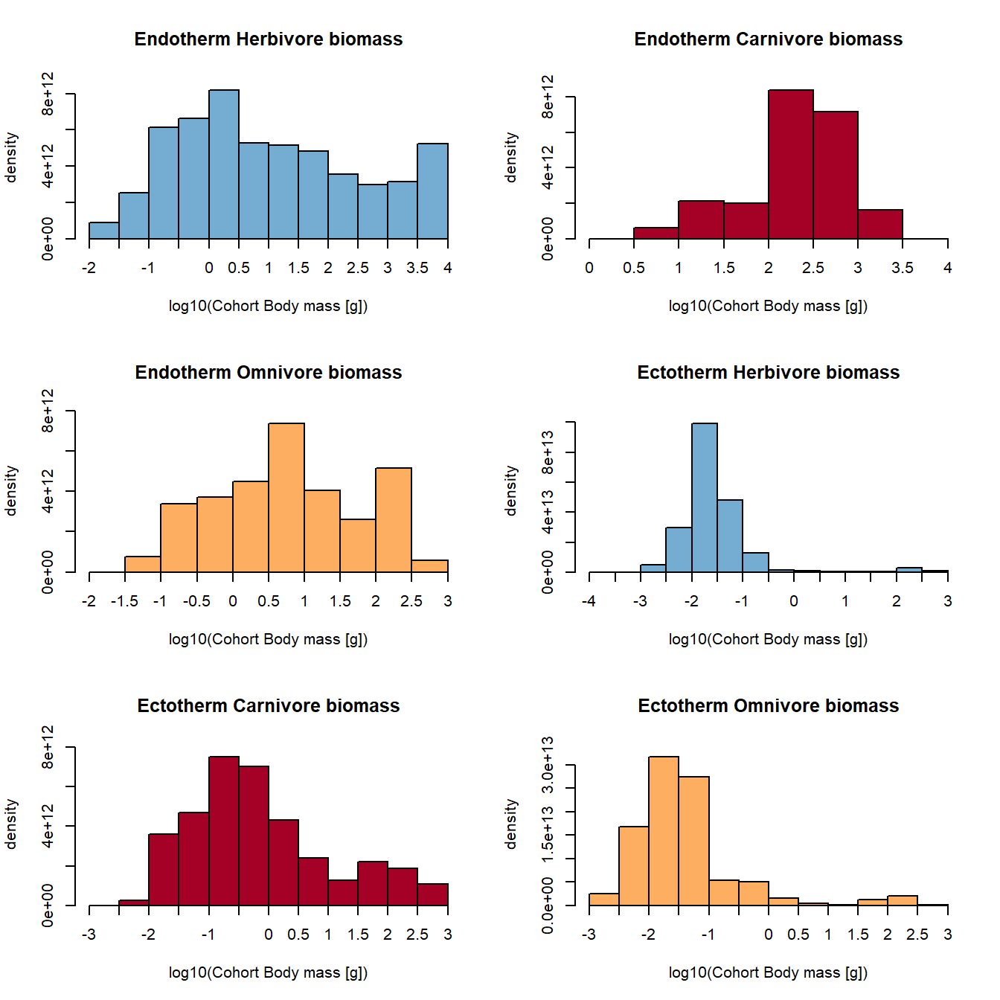
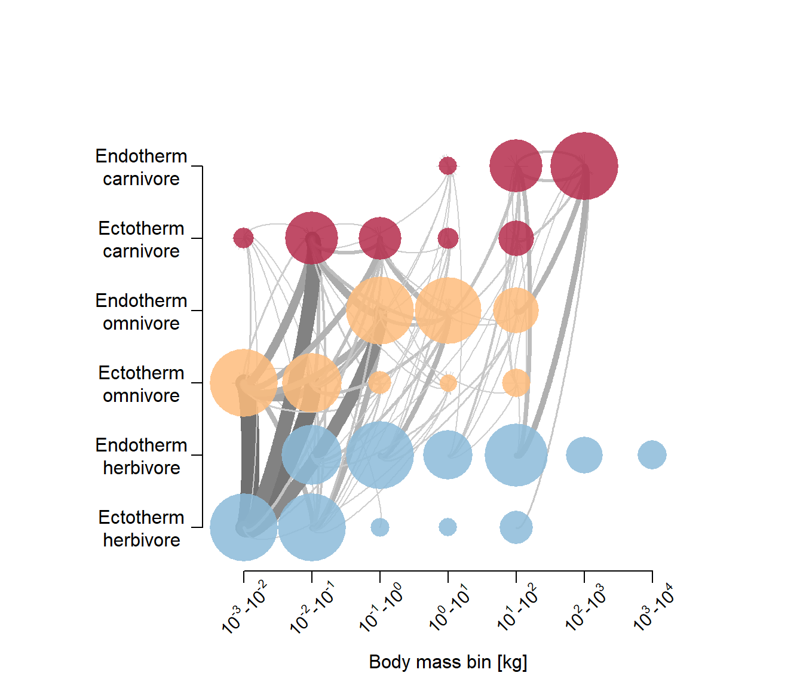
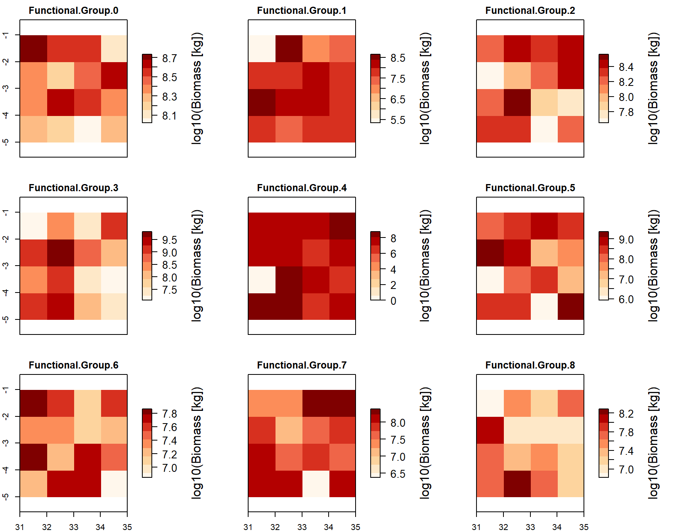

Chapter 4 Step 4 - Spin-up and demonstrating plotting functions
The spin-up usualy requires a 100-1000 year simulation for the ecosystem parameters to stabilise. Here we will use just 2 years for demonstration. The function takes as input the output data fram madingley_init() as well as the standard model input variables /(which can be modified).
The below code is the same as in the vignette example except I had to define my own output folder for some reason.
mdata2 <- madingley_run(
out_dir = "temp",
madingley_data = mdata,
years = 2,
cohort_def = chrt_def,
stock_def = stck_def,
spatial_inputs = sptl_inp,
model_parameters = mdl_prms,
max_cohort = 100)% Processing: realm_classification, land_mask, hanpp, available_water_capacity
% Processing: Ecto_max, Endo_C_max, Endo_H_max, Endo_O_max
% Processing: terrestrial_net_primary_productivity_1-12
% Processing: near-surface_temperature_1-12
% Processing: precipitation_1-12
% Processing: ground_frost_frequency_1-12
% Processing: diurnal_temperature_range_1-12% List of 10
% $ cohorts :'data.frame': 1581 obs. of 16 variables:
% $ stocks :'data.frame': 32 obs. of 3 variables:
% $ cohort_def :'data.frame': 9 obs. of 14 variables:
% $ stock_def :'data.frame': 2 obs. of 10 variables:
% $ time_line_cohorts:'data.frame': 23 obs. of 11 variables:
% $ time_line_stocks :'data.frame': 23 obs. of 3 variables:
% $ out_dir_name : chr "/madingley_outs_16_12_21_15_38_33/"
% $ spatial_window : num [1:4] 31 35 -5 -1
% $ out_path : chr "temp"
% $ grid_size : num 1This output is similar to the previous outpur from madingley_init() only it also contains stocks and cohorts as timeslines.
Lets view these timelines.
% Warning in xtfrm.data.frame(x): cannot xtfrm data frames
% Warning in xtfrm.data.frame(x): cannot xtfrm data frames Plot body mass density
Plot body mass density
% loading inputs from: temp/madingley_outs_16_12_21_15_38_33/
Plot trophic pyramid
% loading inputs from: temp/madingley_outs_16_12_21_15_38_33/
Create log10-binned food-web plot
% loading inputs from: temp/madingley_outs_16_12_21_15_38_33/
Plot the spatial biomass
% loading inputs from: temp/madingley_outs_16_12_21_15_38_33/